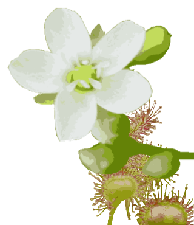

どんなに美味しいと説明されてもお腹は膨れない。食べてしまえば納得の行く。こんな出来栄えのものです。

▼トキ色
トキソウは日当たりのよい原野の湿地に生える多年草。葉は1枚で茎の中ほどにつき、茎の先に葉状の苞が1枚ある。『いにしえのトキ草むらに想い見る』
▼桃色釣鐘
ウラジロヨウラクは山地に生える落葉低木。高さ1～2mになる。葉は枝先に輪生状につき、長さ3～7cmの倒卵形でふちに鋸歯状の長い粗毛がある。裏面は緑白色。花柄には腺毛がある。『鐘楼ウラジロヨウラク時を超え』
▼成淡緑色
ハナヒリノキは山地に生える有毒の落葉低木。高さは1～2mになる。よく分枝し、若枝には細毛が密生する。葉は長さ2～8cmの倒卵形または長楕円形でふちに毛状の鋸歯がある。｢ハナヒリ｣とは、くしゃみのことで、葉の粉を鼻に入れるとくしゃみがでることによる。『是如何に緑釣鐘くしゃみの木』
▼爽快な夏の朝
ナンテンハギは山野に生える多年草。茎は株立ちになり、高さ40～60cmで稜があり軟毛で覆われる。葉は革質で卵形または広皮針形の2枚の小葉からなる。春先の若葉は山菜になるそうです。『久しくてナンテンハギに青い空』
▼炎天花
ヤブカンゾウは平地から丘陵地の草原、川原、土手などに生える多年草。根は多数、丈夫で長くのび、一部が紡錘状に太くなる。葉は根元から多数が2列に並んで出る。長さ40～60cmの線形、鋭頭で両面とも無毛。毛が垂れ下がる。花茎は高さ50～130cmで上方に苞がある。花序は2裂し、それぞれに5～6個の花を1日1個ずつ上を向いて開く。花被片は広卵形。雄ずいが花弁化するので八重咲きとなる。果実はできない。若い芽を摘んで山菜とする。夏本番の暑さにかわいそうとエアコンの利いた部屋で育てたら枯れてしまう。暑さは貴重な恵み。
『炎天花ヤブカンゾウの競い立ち』
▼半化粧
マタタビの実は塩漬けや果実酒にする。山地に生え、葉は互生し、長さ１０ｃｍの卵円形で花期には枝先の葉が白くなる。雄花、雌花、両性花がある。『マタタビの盛りを示す半化粧』
▼揺れて弾ける
キツリフネは山地の谷沿い、湿地など日当たりのよい所に生える一年草。茎は水分に富み、全体に無毛で白っぽく、50～80cmの高さに直立する。葉は互生し、長だ円形～卵形でへりに鈍くあらい鋸歯がある。花は淡黄色で1～5個つく。閉鎖花もよくつける。がく片3枚。花弁3枚のうち2枚には内側に赤褐色の斑点がある。雄ずい5本、雌ずい1本。『花は揺れ実は弾け散るキツリフネ』

▼木陰
暑い日ざしをさえぎる林床の涼しげな場所でコバノギボウシに出会った。木の葉の隙間から差し込む日差しにきらきら輝く様が湿った黒い土によく映える。『風に揺れ木漏れ日照らすギボウシを』
▼目に飛び込む
オオバギボウシは山地の草原に生える多年草。葉は根生して斜めに生える。葉身は広卵円形かまたは卵円形で先は短くとがり基部は心形をなす。裏面の脈上には突起が見られる。『飛び込んだオオバギボウシ沢の脇』

▼輪廻
子供の時からヤマユリはユリの大様だと思っていた。特徴のある模様でいい香り。大きな木が切り倒されて日が差し込んだ所に次の年からヤマユリが咲いた。すごい生命力を持っているものだと関心した。『ヤマユリが永き眠りに目を覚ます』

▼工夫する
かわいい花ですが、名前は駒繋ぎ（コマツナギ）。馬を繋ぎ止めるほど茎は丈夫
だそうです。工を（夫）たすけるということは、考えるということじゃない。いろんな考え方を使うことを やめるという実行をすることです。
▼真っ直ぐ
ウバユリは山地の常緑樹林の下に生える多年草。茎は緑色、中空で直立し、中部以下に5～6枚の葉が集まってつく。葉は長だ円状卵心形で、表面に光沢がある。葉脈は網目状で長い柄がある。『ウバユリや真っ直ぐに立つ森の陰』
▼堂々
夏の盛り、山の道脇では数々のゆりが見られます。ドライブの途中、地味ですが大きくて堂々とした風格のオオウバユリを見かけました。知らぬうちに『こんなもの』と思うような習慣性を持って、総てのものを常識的に見てしまえば、やはり遠くの手の届かないものの方が良く思えてしまう。自分自身が自由で素晴らしいなんて、なかなか気づけないですよね。

▼簡素
ヤマアジサイを見ると、アジサイより派手でない分、簡素で美しい。紫陽花の文字も素敵でいい響きがある。ヤマアジサイは花の色も変化に富んでいるらしい。『梅雨寒しアジサイの咲く森歩む』
▼栃木海の家
スカシユリは海岸の砂浜やがけに生える多年草。鱗茎から匍匐枝を伸ばす。鱗茎の鱗片は卵形で、先が鋭くとがる。茎は直立し、稜線があり、若い時期には白い綿毛をかぶる。高さは20～60cm。下部に乳頭状突起が多数ある。葉は長さ4～10cm。幅1～2cmの披針形。鋭頭または鈍頭で葉柄はない。花は茎頂に1～3個つき、上に向かって開く。花被片の下半部が細く、となり合った花被片との間にすき間ができることから、この名がある。近年、園芸的に品種改良されている。『潮風の強き地に立つスカシユリ』
▼海に生きる
海岸の岩上にあざやかなピンク色の花を輝かせるハマナデシコ。海岸近くに咲く植物は、厚肉な葉に育つものが多い。カワラナデシコの細身で可憐な様子とは対照的に茎は太く株立ちし、基部は木化する。『生き様で大和ナデシコ七変化』
▼汲み含む
タマガワホトトギスは山地の湿った谷すじなどに生える多年草。葉は広卵形で先はとがり、基部は茎を抱く。両面とも毛はほとんどないが、ふちと裏面脈上に短毛を生じることがある。黄色の花をヤマブキの名所である京都府井出町の玉川の名をとってくるとは…。『湧き水を含みタマガワホトトギス』
▼半途にして
クサアジサイは山林に生える多年草。高さ20～70cm。葉は狭卵形で先がとがり、三角状の鋸歯がある。茎頂に散房状花序をつくり、周辺部に径1～2cmの中性花がある。花弁5枚、雄ずい多数。果実はさく果。『囲まれてクサアジサイや帰り道』
▼規則
ネムノキは山地に生える落葉高木。葉は互生し、大型の2回羽状複葉で長さ20～30cm、羽片は7～12対、小葉は15～30対あり対生する。夕方には葉を閉じて、小枝の先に細くてやわらかな紅淡色の頭状花序をつける。樹皮はうちみ、せきどめに、葉は染料に、材は桶や屋根板に使われた。規則は必然に合理的な働きの中から定まって行く。世の中の規則を全部無くしてしまっても世の中の働きは狂ったりしない。
『夕暮れに夢移ろうネムの花』
▼暑さ
うだるような暑さの中、こんな時だからこそ見られる花もあるだろうと出かけると、ヌマトラノオが咲いていた。オカトラノオとは違い花穂は傾かない。『夏暑しヌマトラノオと夕涼み』
▼臭気
枯れた葉や茎はいやな臭いだが花はいい香りのヘクソカズラ。茎は右巻きに巻きつく。右巻きとは、右手で棒を握った時、親指の方向に伸びる場合を指す。果実を潰してしもやけ、やけどの薬とする。『汗ばんだ臭み堪えてヤイトバナ』

▼白鮮やか
ヤブミョウガは林の陰湿な地に生える多年草。花は白く、1日で萎むらしいが花期は長い。青藍色の実を付け花と実の両方を観賞できる。『白く咲く林の影にヤブミョウガ』
▼霧降
クルマユリは亜高山帯の草原や深山の林内に生える多年草。鱗茎は直径2～2.5cmの球形で、鱗片に関節があり、そこから離れやすい。茎は高さ30～70cmになり、下部に乳頭状突起がある。葉は披針形または狭卵形で、ふちに乳頭状突起がある。上部および下部の葉は小さくて少なく、大部分の葉は茎の中部に集まって互生し、輪生状に並ぶ。花は茎の先に1～6個つき、斜め下を向いて咲く。花被片は長さ3～4.5cmの披針形でそり返る。果実はさく果で、長さ1.5～2cmの倒卵形をなし、3本の稜がある。『梅雨空に霧降眺めクルマユリ』
▼雨に濡れて
沼原湿原に咲くニッコウキスゲ。張りのある厚い花びらは、雨露をものともしない感じ。ノハナショウブは逆に内側の細長い花びらが手で頭を覆うように倒れて面白い。『夏の雨はじけ滴るキスゲかな』『雷と雨に伏せ入るハナショウブ』
▼林の中
アカショウマは山地の林の中や日当たりのよい草地に生える多年草。基部は暗紅色。根上葉は3回3出複葉。茎頂に複総状花序を出し、白い花を密につける。雄ずい10本、雌ずい2本、花柱は2本ある。『山深い林に潜むアカショウマ』
▼暗がりに煌く
ハエドクソウは山野の林の中に生える多年草。茎は直立し、鈍い四角形で節の下部は少し膨らむ。葉は対生し、卵形か3角状広卵形で、先はとがり、へりに鋸歯がある。花は対生し、横を向いて開くが、果時には下を向く。『暗がりに光煌くハエドクソウ』
▼蔓草
イケマは山地に生える多年草。茎は左巻きのつるで、葉は対生し心形で先が急に短く尾状にとがり、裏面は淡緑白色。『山道の地に蔓草イケマ花』
▼夕立
ニガクサは原野の草地、特に水辺に近い湿地を好む多年草。茎はやや太く、直立して高さ30～80cmになり、基部から長い匍匐枝を出す。葉は対生し、卵状長楕円形または広皮針形で、先端は鋭くとがり、へりには鋸歯がある。『ニガクサとしばし夕立やり過ごす』
▼木萩
キハギは山地に生える落葉低木。葉は3出複葉。小葉は長さ2～4cmの長卵形または長楕円形。葉の脇から総状花序を出し、花は淡紫白色で、時に黄色を帯びる。『萩なれど異なるが故名はキハギ』
▼花みこし
ムラサキシキブは山野に生え高さ2～3mになる落葉低木。葉は対生し長さ6～13cmの楕円形または長楕円形で両端はしだいにとがり、ふちには細かい鋸歯がある。葉腋から集散花序を出す。幹はまっすぐで強いので、道具の柄や杖などに用いられた。『集まりてムラサキシキブ花神輿』
▼弾く
メハジキは日当たりのよい草地や道端に生える2年草。全体に白い細かい毛が密生している。茎は鈍い4角形で直立し、150cmにもなる。葉は対生し、茎葉も葉柄が長く3全裂か3深裂する。花は茎の上部の葉腋ごとに輪状につき、苞は針状でがくより短い。花冠は淡紅紫色の唇形で下唇は3裂し、内側に赤いすじがある。『梅雨空に眼はじき立つ輪状花』
▼里の道
コナスビは原野から人家までいろんなところに生える多年草。茎や葉に軟毛があり、茎の下部は地を這い、葉は対生し卵形。雄ずい5本、雌ずい1個。日本全土に広く分布する。『コナスビに会えばのどかな里の道』

▼食虫植物
モウセンゴケは山地や原野の日当たりのよい湿地に生える多年草の食虫植物。葉は根出し、葉身は円形で、表面に紅紫色の腺毛が多数あり、昆虫をとらえる。花茎は無毛で、はじめは巻き、のちにのびて上方の片側に数個の白色花をつける。がくは深く5裂し、裂片は長だ円形でふちに腺毛がある。花弁は5枚で倒卵形。雄ずい5本、しずい1本。花柱は3本でそれぞれ深く2裂する。『木道に屈み覗くモウセンゴケ』
▼山菜
ミツバは道ばたや林の下に生える多年草。葉は卵形の3小葉からなり、互生。茎の先に大散形花序が円錐状につく。埼玉の家では庭でミツバを採って食べた。収穫時期が大切です。『しなやかに伸びて木陰にミツバ咲く』
▼違いがわかる
ミヤマタムラソウは深山に生える多年草。葉は対生し、1～2回羽状複葉。葉の裂片は丸みがある。葉の形でアキノタムラソウとの違いを見分けられる。『似ればこそわかるミヤマタムラソウ』
▼山の草原
クガイソウは山地の日当たりの良い草地に生える多年草。一つ一つの花は小さいが青紫色の総状花序はよく目立つ。葉は長楕円状披針形輪生葉が何段にもつくことから（九階）クガイソウという。『輪を作り青紫伸び行くクガイソウ』
▼やっと会えたね
ツルリンドウの赤い実を発見してから、花と出会えるのを楽しみにしていました。山のハイキングコースで偶然出会えて感激です。葉は対生でツルは右巻きに伸びる。『こんにちはツルリンドウに笑みこぼれ』
▼時を得て
ゴゼンタチバナは亜高山帯の針葉樹林の下または高山帯に生える常緑の多年草。茎には4稜があり、茎の上部に6枚の葉がつき、一見輪生状に見えるが、対生する1対の葉腋にさらにそれぞれ1対の葉が出ている。基部は細く柄はほとんどない。『時を得てゴゼンタチバナ花出会う』
▼変形
スダヤクシュは低山帯から亜高山の林内に生える多年草。全体に白色の毛と腺毛がある。葉はチャルメルソウに似て、長い柄を持ち、ざらつく。心円形で浅く5裂し、へりには鈍鋸歯がある。基部に托葉がある。がくは白色の鐘形で5裂する。花弁は5枚、糸状でがくよりも少し長い。『実を結び形を変えてスダヤクシュ』
▼ひと違い
オオバノヨツバムグラは亜高山帯の針葉樹林の湿った所に生える多年草。葉は4枚ずつ輪生するが、各輪は隔たっている。葉質はうすく、長楕円～狭倒卵形～楕円形で3本の脈が見え、脈の上とへりに細毛がある。葉柄はない。『オオバにてヨツバムグラのひと違い』
▼気付く
オニルリソウは山地の草地に生える2年草。全体に粗剛毛が生える。茎には長い開出毛があり、上方で枝を分ける。葉は互生し、長楕円形状皮針形か皮針形で両端がとがる。下部の葉は大きく有柄であるが、上部ではしだいに小さく無柄となる。『気付かないオニルリソウや小花咲く』
▼川の根
ミゾホオズキは山麓の清流のへりや谷川のほとりなどに生える無毛で柔らかな多年草。茎は4角形で、高さは10～30cmで分枝する。葉は対生し、卵形～広卵形でへりにはまばらに低い鋸歯がある。下部の葉には葉柄があるが、上部ではしだいに短く、最上部の葉は無柄となる。『川の根にミゾホオズキが現われし』
▼川の根
ミヤマトウバナは谷間の林の中に生える多年草。茎は高く30～70cm。葉は長卵形でやや薄くまばらに毛がある。花冠は白色でわずかに紅紫色を帯びる。『せせらぎにミヤマトウバナ娘の笑顔』
▼知り合う
コバノイチヤクソウは高山の針葉樹林下に生える多年草。全体的にはイチヤクソウより小さいが、花だけは同じ大きさである。葉は広楕円形または円形で、先は鈍く尖るかまたは丸く、尖った細かな鋸歯がある。『深山でコバノイチヤクソウに触れ』
▼指して
サワランは湿原や湿った岩場などに生える多年草。茎は高さ10～20cmで、茎の中央のやや下方に1～2枚の葉をつける。葉は広線形で先端は尖り、基部は茎を抱いている。花は開花しないでむかごとなることもある。『サワランと木道の脇指指して』
▼分かつ
ヨツバヒヨドリは深山の日当たりのよい草地に生える多年草。茎は数本が株立ちとなり、単一で直立する。葉はフツウ4枚、まれに3枚ずつ輪生し、長だ円形または被針状長だ円形で、先は長くとがり、へりには鋭い鋸歯があり重鋸歯となる。葉柄は短い。両面に短毛があり、裏面には腺点を散布する。茎の頂上に密な散房花序をつくり、淡紫色で5個の管状花からなる頭状花が多数かたまって咲く。総苞は筒形、総苞片は2列に並び、外片は短く内片は長い。『フジバカマヨツバヒヨドリ分かつ今』

▼準備万端？
山の明るい草地に生えるノギランはユリ科の多年草。葉は広倒皮針形で多数根生する。雨が降っていたとは言え花に特徴があるから調べればすぐわかるだろうと考えたのは甘かった。雨が降ったとは言え雨具を準備しなかった落ち度も重なった。準備はしっかりした方がいいね。『雨に濡れ見入るノギラン懲りもせず』
▼霧の中
コオニユリは山地の日当たりのよい草原に生える多年草。鱗茎はやや球形。茎は直立して高さ1～1.5mで乳頭状突起がある。葉は線形～広線形で多数互生する。花は茎の先に2～10個総状に斜め下向きに開く。花はクルマユリと似ているので、葉のつき方を見比べて識別する。オニユリとは葉腋にむかごがつかないことで区別する。雄国沼湿原の霧の中、Ｔシャツでは寒い夏の日の木道脇にひときわ鮮やかでした。細い茎に繊細な風鈴が釣り下がっているよう。『霧の中寒立ち出るコオニユリ』
▼再会
トチバニンジンは林の下に生える多年草。茎は直立し高さ50～80cm。先端に3～5枚の葉を輪生する。葉は柄があり、掌状複葉。小葉は皮針形または長だ円形～長だ円状皮針形など。へりには波状の鋸歯がある。茎の先端に球形の散形花序をつけ、多数の柄のある淡緑色の小花を開く。花序は1～4本の枝を分け、雌性花と雄性花があり、花弁は5枚。『懐かしむ写真赤い実トチバ草』